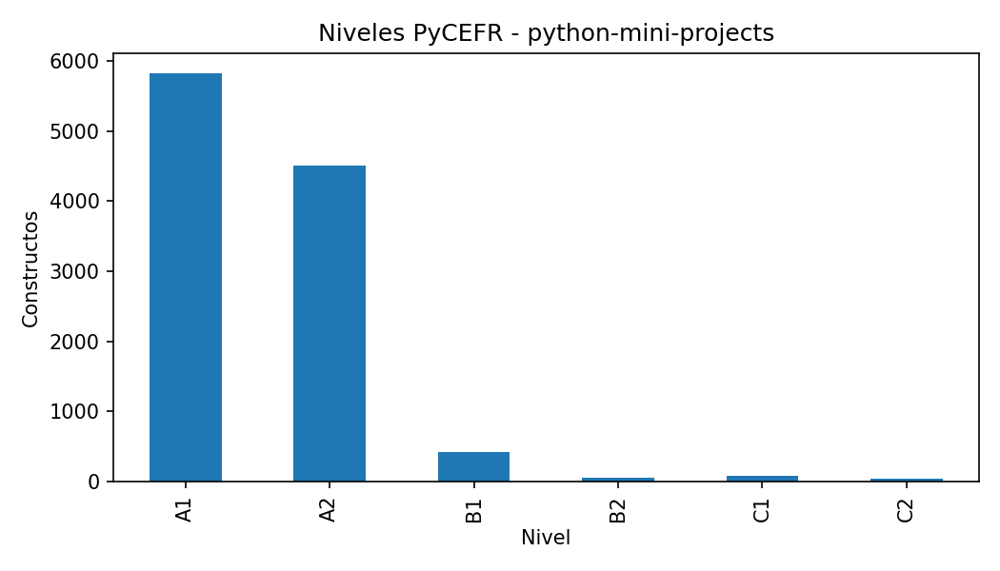
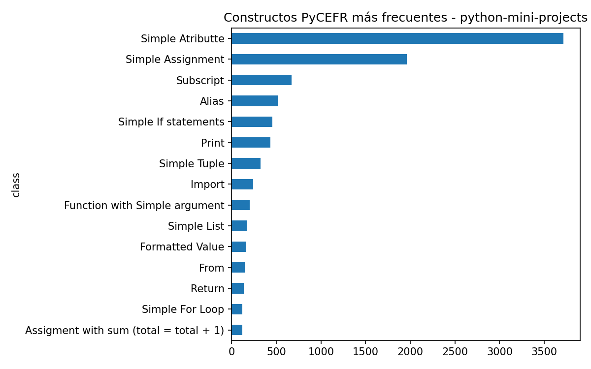
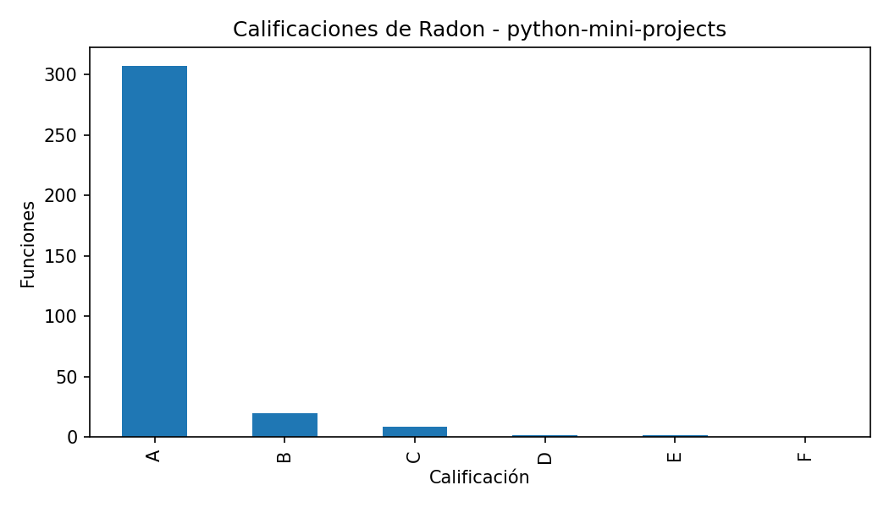
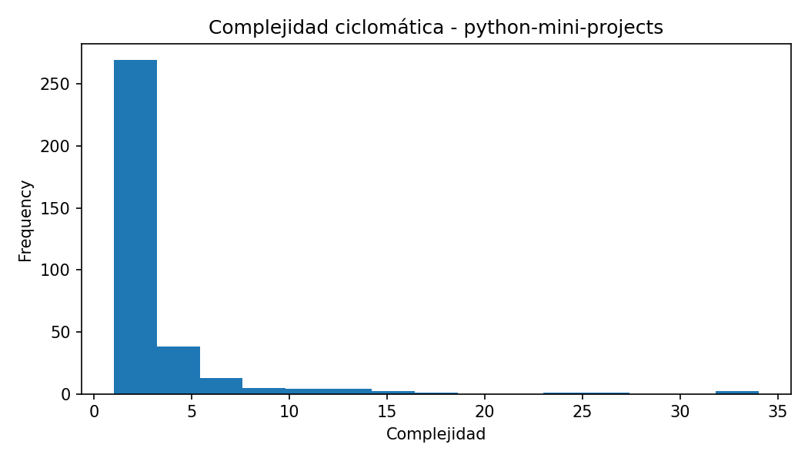
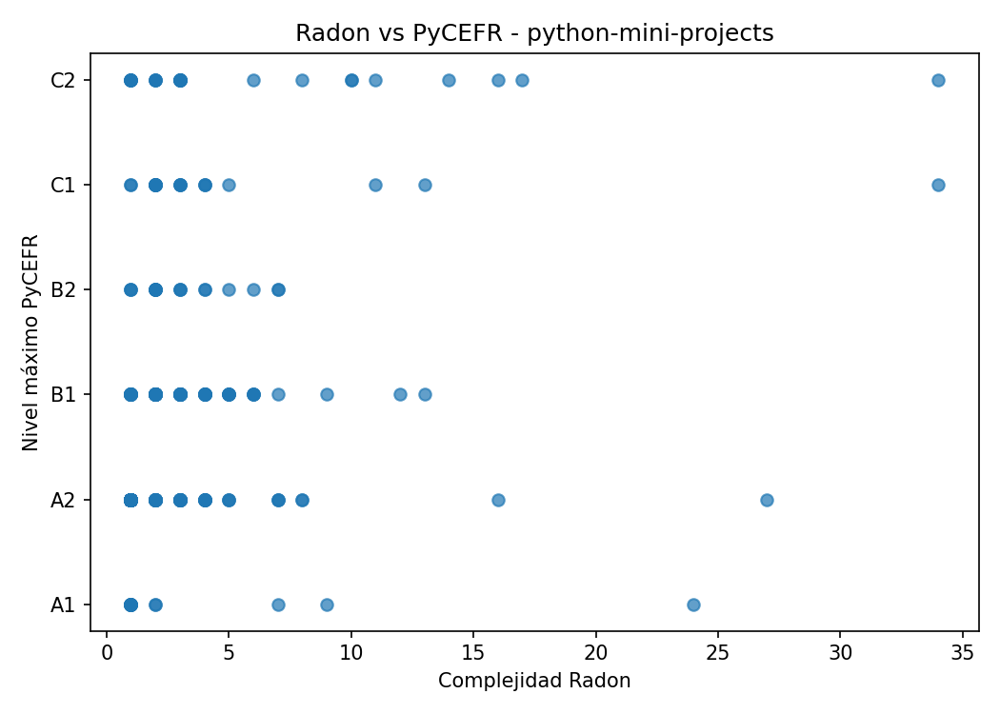

Constructos PyCEFR detectados: 10907
Clases PyCEFR distintas: 83
Nivel máximo PyCEFR: C2
Funciones Radon detectadas: 340
Complejidad máxima Radon: 34.0
Calificación máxima de Radon: E
Casos interesantes detectados: 83
Este caso contiene funciones donde las herramientas muestran patrones de coincidencia o discrepancia. Estos ejemplos son candidatos para comentarse en la memoria.
| class | count |
|---|---|
| Simple Atributte | 3713 |
| Simple Assignment | 1962 |
| Subscript | 672 |
| Alias | 518 |
| Simple If statements | 454 |
| 436 | |
| Simple Tuple | 323 |
| Import | 242 |
| Function with Simple argument | 205 |
| Simple List | 167 |
| file_name | name | complexity | radon_grade | lineno | endline |
|---|---|---|---|---|---|
| converter.py | converter | 34 | E | 19 | 72 |
| bot.py | on_message | 34 | E | 41 | 171 |
| biling_system.py | bill_area | 27 | D | 288 | 345 |
| tic-tac-toe-AI.py | win_check | 24 | D | 154 | 168 |
| main.py | fetch | 17 | C | 15 | 82 |
| Rock-Paper-Scissors Game.py | spin | 16 | C | 23 | 58 |
| hangman.py | play | 16 | C | 16 | 101 |
| tic-tac-toe-AI.py | CompAI | 14 | C | 95 | 124 |
| profilepic.py | pp_download | 13 | C | 8 | 59 |
| utils.py | build_dataset | 13 | C | 59 | 80 |
| file_name | function | complexity | radon_grade | max_level | n_pycefr_constructs | case_type |
|---|---|---|---|---|---|---|
| snake_game.py | change_direction | 9 | B | A1 | 13 | Radon alto / PyCEFR bajo |
| snake_game.py | next_turn | 8 | B | A2 | 45 | Radon alto / PyCEFR bajo; Muchos constructos simples acumulados |
| snake_game.py | check_collisions | 8 | B | A2 | 21 | Radon alto / PyCEFR bajo |
| ball_bounce.py | move_ball | 7 | B | A2 | 35 | Radon alto / PyCEFR bajo; Muchos constructos simples acumulados |
| converter.py | converter | 34 | E | C2 | 141 | Coincidencia en dificultad alta |
| main.py | main | 3 | A | C2 | 166 | PyCEFR alto / Radon bajo |
| main.py | detect_align_faces | 2 | A | C1 | 269 | PyCEFR alto / Radon bajo |
| Rock-Paper-Scissors Game.py | spin | 16 | C | A2 | 37 | Radon alto / PyCEFR bajo; Muchos constructos simples acumulados |
| main.py | count | 3 | A | A2 | 47 | Muchos constructos simples acumulados |
| main.py | StartPage | 2 | A | C1 | 208 | PyCEFR alto / Radon bajo |
| main.py | init | 1 | A | C1 | 192 | PyCEFR alto / Radon bajo |
| main.py | init | 1 | A | A2 | 36 | Muchos constructos simples acumulados |
| main.py | SampleApp | 3 | A | C2 | 139 | PyCEFR alto / Radon bajo |
| main.py | count | 3 | A | A2 | 44 | Muchos constructos simples acumulados |
| main.py | switch_frame | 2 | A | C2 | 79 | PyCEFR alto / Radon bajo |





Este informe se genera automáticamente. Las conclusiones finales deben revisarse manualmente para comprobar que los ejemplos seleccionados son representativos y adecuados para la memoria.